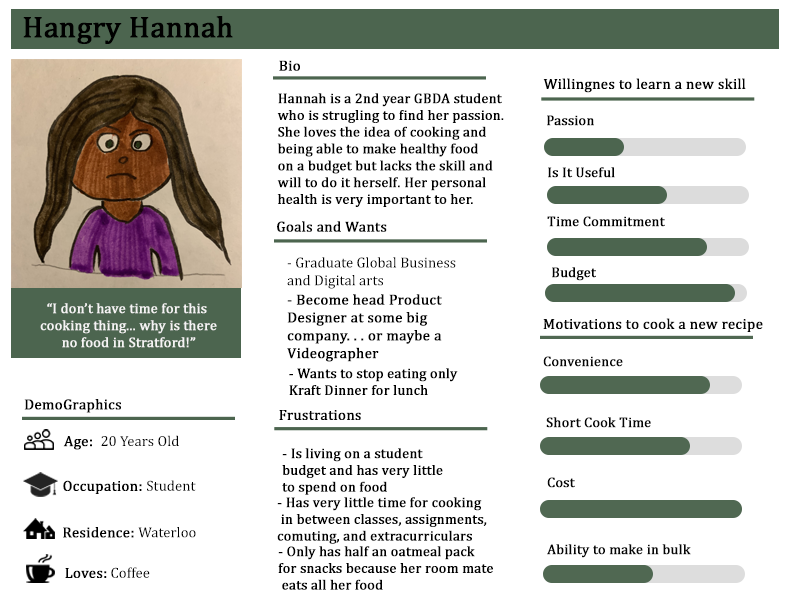
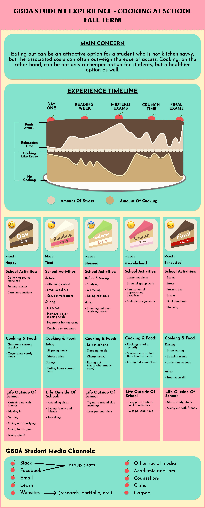
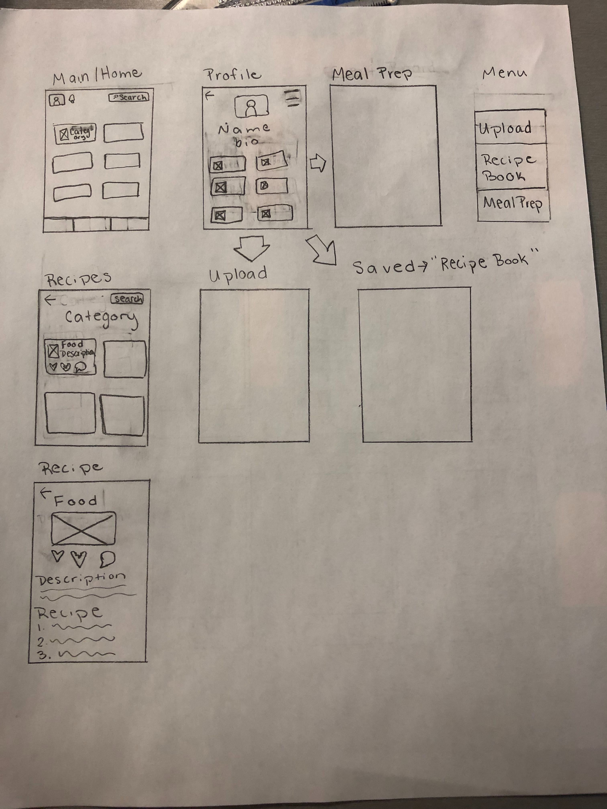
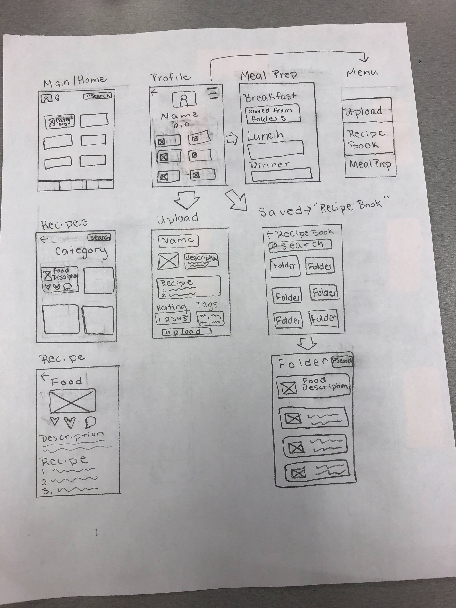
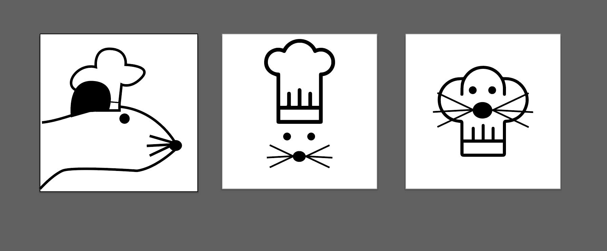
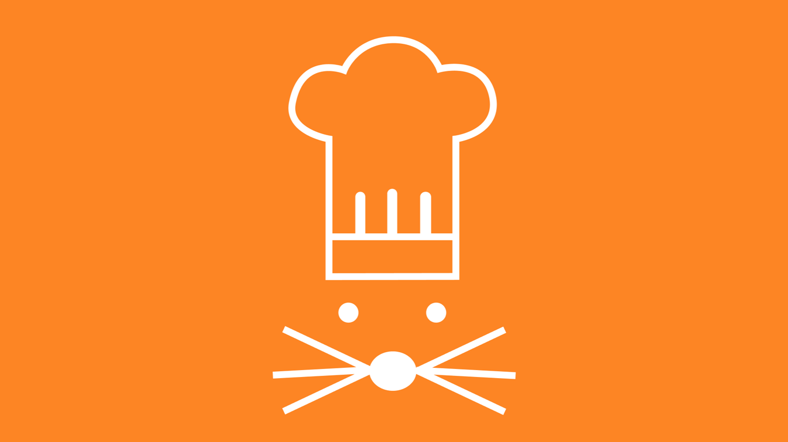
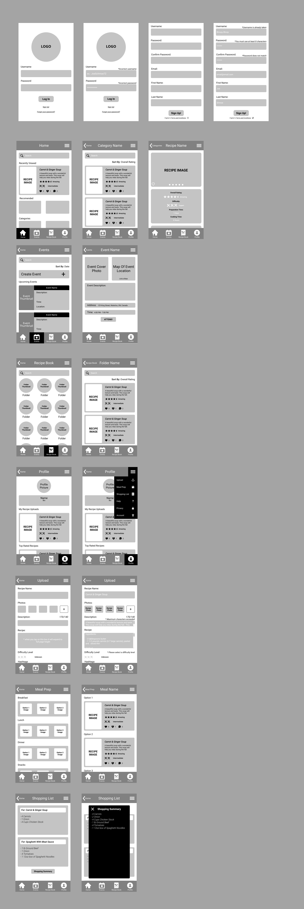

Context
Over the course of 3 months, a talented group of myself and 4 others went through a UX process to reserach, wireframe, usability test, and present an application called UWhiskers. A tool for users to connect with each other through a mutual love of food.
Problem
We aimed to address the lack of community involvement pertaining to the Stratford School of Interaction and Design. We decided to tackle two other issues: the lack of options to help students connect with each other, and the general lack of knowledge many students have about food and eating.
Vision Statement
Our Application will help to improve students ability to cook their own
meals by creating an environment where they can interact and share
their life through the food they enjoy.
The solution we designed is a hybrid between an Instagram-like sharing
service, but specifically for food and resturants, as well as a facebook-like environment
for creating events and communicating with one another. Students can share
their recipes while others interact with posts; as well as creating
events, posting about good resturants, and reccomending tips about how
to cook better.
Research
Having students at the Stratford School of Interaction and Design (SSID) be our target audience, we focused our research on two major areas: an analysis of the ecosystem around SSID, and interviews/surveys of the students attending SSID. Each member of our group individually conducted research around the ecosystem. We conducted demographic surveys of the students, researched the campus that the students attend, and the envirnoment/resources that the city of Stratford has as whole. Diving in deeper I interviewed a few students about their motivations, pain points, and perspective about the issue surrounding the student community more deeply. Below is my accumulation of research given by an ecosystem report.
From here we discussed and evaluated what our primary users goals, motivations, pain points, common traits, etc were. We then used these ideas of our general user to conduct additional research to better understand some of the extreme needs of our users. We took all the information we gathered and developed user personas, One of which is shown below.
Our personas helped us round out who we were designing for. We found that because most students live far from the campus and are very career oriented, they have little time to prepare meals. So, we knew we needed to design an experience that helped students cook and learn efficiently, while having fun along the way. In order to do that we created and experience map.
Experience Map
We wanted our experience map to be a clear, informative, and be a creatively engaging map of a students timeline accross one semester. We outlined the mood, main concerns, and more about how a student would feel at certain points of the semester. We themed our map comewhat like a cake menu, as our main theme for our app surrounds food. The experience map can be seen below.
Designs
Once all our research and planning was finished we moved on to creating designs, sketches and mockups. Our first priority was to brainstorm and figure out what the general layout of our app was going to be. We decided to go with a mobile app, as we understood it would be more covenient for our users, and we started sketching. We figured a good way to go about structuring our preliminary prototype was to each create our own sketches and then come together to compare what we liked and what we didn’t. Below are some of our initial mockups and wireframes.
 We figured we wanted our app to have three main aspects to it; an ability to post and maintain your own profile, an ability to share and interact with others, and an ability to compile a personal recipe book to store your favourite recipes and create meal plans. once we had a final paper prototype complete, we wanted evaluate how functional it actually was. So, we conducted some usability testing. Through testing we discovered that all of our main components made sense but, the site flow and what certain interactions did were somewhat confusing. Due to this we decided our hot bar would be well labelled and have only ‘one away’ interactions, meaning that to get to a certain page, such as the recipe book, it would only take one interaction of the hot bar to take you there. Anything else we deemed less important but still necessary we put into a hamburger menu, accesable from any page.
Prototyping
We had a solid concept of what we wanted our app to be and how it would function so we began prototyping our concepts. Using Figma we were able to all work on creating the prototyping at the same time but on our own schedule. However, we quickly ran into a road block. At this point we didn’t have a logo or even a solid brand or name for our app so it was really difficult to create a cohesive prototype. We decided to brainstorm much like we did with our initial sketching. We had a meeting and decided on the name ‘UWhiskers’ as the campus it was for was a UWaterloo campus, and ‘whiskers’ being a play on both a kitchen utensil and the classic movie ‘Ratatouille’. From here we all created a logo design on our own, coming back for a second meeting to discuss and create a final logo. Below are some of the ideas.
We ended up having little to discuss because we all loved the logo one of the group members, Brendan, created. We all decided that we would go with Brendan’s idea for the logo (located as the middle image above) and from there worked on colour ideas. We established that an orange would be our main colour as it seemed to fit our theme nicely. Below is our final logo.
Once he had a general idea of branding we were able to effectively put together a first prototype using Figma. We created user flows, error screens, log in/sign up screens, etc. Since we were using Figma we all contributed to making the UI of the prototype. However, I mainly contributed by creating the general flow, orginizing how many frames we needed, and how it was to be laid out, as well as editing; overall I ensured the big picture made sense and everything was cohesive. Below is out initial prototype.
From here we did some more user testing, which gave us the information we needed to make our final tweaks. We created a more fleshed out prototype; adding colour, tweaking designs, and adding more user flows to illustrate different interactions. With the final prototype completed we creatd a PowerPoint and gave a presentation about what our app accomplished and how it accomplished those goals.
High Fidelity Mockup

Takeaways
I learned a lot through this project; especially about the UX design proccess. I think my most important takeaway is about planning. Throughout the execuion of our design I found myself thinking ‘I wish we had more information’. While we had conducted research, it wasn’t necessarily enough, and it definitely wasn’t the best quality. If I were to do this project again I think the biggest thing I would change is figuring out what to research before diving in. We had a lot of data but most of it was didn't help our design because we asked the wrong kinds of questions and read the wrong articles. So, in future I know to ensure to have a lot of good quality research before beginning the design phase. Another thing I realized is that my graphic design skills were below par when compared to my peers.... atleast I felt like they were. While I think this is okay, there were many other ways where I was able to contribute, I will be working to improve those technical skills for future projects. Although there were areas I found needed improvement, one thing I felt I really excelled at and gave a lot of value to the team were in my leadership capabilities. Since this was a class project and no specific roles were delegated, we were all equal and contributing to each element of the process. More often than not I found myself taking on more of the Project Manager type role; facilitating discussion, ensuring decisions got made, keeping everyone accountable to deadline, and keeping track of the ‘big picture’ to ensure everything was cohesive, are all examples of what I excelled at during this project.